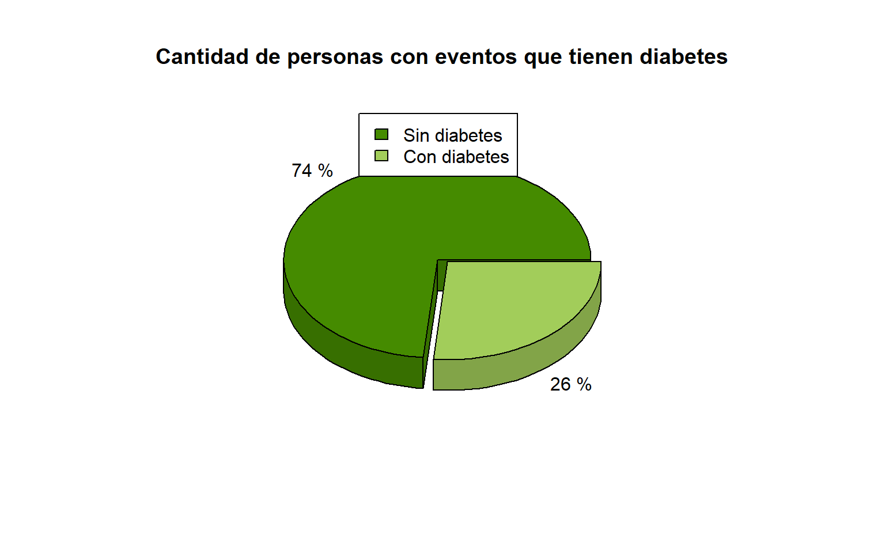

Análisis de Datos y Predictor de Eventos Coronarios
## Loading required package: MASS## Loading required package: ROCR## Parsed with column specification:
## cols(
## .default = col_double()
## )## See spec(...) for full column specifications.Introducción
Se elaboró una herramienta para uso médico y con motivo de dar un diagnóstico temprano de eventos coronarios para los pacientes que se presentan en la guardia de un hospital.
Relación Entre Síndromes Angin osos y Eventos Coronarios
En este grafico se analizó si el presentar síntomas anginosos aumenta la probabilidad de tener eventos coronarios. Los resultados muestran que, aunque el porcentaje es significativo, no es muy probable que tener síntomas anginosos lleve a tener eventos coronarios.

Eventos Coronarios Segun Edad y Genero
Al interpretar los gráficos se puede ver que los hombres tienen un pico estable dentro de los 30 y 40 años, mientras que las mujeres presentan un pico más pronunciado de eventos dentro del mismo rango de edad. Con los datos de la tabla analizamos que 4 de cada 5 pacientes que ingresan al hospital con eventos coronarios son hombres.
| Hombres | Mujeres | |
|---|---|---|
| Número de pacientes con eventos | 97 | 24 |
| Pico máximo de edad | 87 | 80 |
Pacientes masculinos que presentan eventos

Pacientes femeninos que presentan eventos

Los Diabéticos, los Obesos y la Hipertensión Arterial
Diabéticos obesos

Buscamos la relación entra la obesidad y la tendencia a tener diabetes. Y como a su vez ese grupo de personas tiene a tener HTA
Diabeticos con HTA

Teniendo en cuenta los datos anteriores comparamos la tendencia de la diabetes a los eventos cardiacos.
Relación entre Fumadores y Obesos
Se analizó la relación de los pacientes que tienen obesidad y que son fumadores, en cuanto a la tendencia de tener eventos cardiacos. La base de datos de pacientes no define si son fumadores activos o pasivos, por lo cual se agruparon ambos.
 Dentro de la base de datos pudimos ver que el 10% de los encuestados tienen alguno de estos dos factores de riesgo. Del total de 121 personas con eventos coronarios, 18 de estos son fumadores obesos, mostrando cierta tendencia de estos dos factores.
Dentro de la base de datos pudimos ver que el 10% de los encuestados tienen alguno de estos dos factores de riesgo. Del total de 121 personas con eventos coronarios, 18 de estos son fumadores obesos, mostrando cierta tendencia de estos dos factores.
Predictor
Seleccion de Variables
Para poder generar un predictor es necesario realizar una selección de variables. Esta selección de variables no puede ser aleatoria, las variables deben tener relevancia sobre los eventos cardiacos. Para eso usamos el método de selección de variables “stepwise” que consiste en la prueba de un modelo con una cantidad determinada de variables donde se les prueba su relevancia sobre los eventos caridacos y se van eliminando hasta que quedan solo las más relevantes. En nuestro caso las más relevantes fueron:
-Edad
-Genero
-Síndrome Anginoso
-Duración de Dolor
-Presencia de Dolor Actual
-Diabetes
-Obesidad
-Antecedentes Familiares
Luego de la selección de variables el Modelo utiliza las mismas para generar el predictor.
Validacion del Modelo
Curva AUROC
La curva AUROC sirve para demostrar la eficiencia de un modelo. Esta curva devuelve un índice entro 0 y 1, el cual al ser mas cercano al 1 representa una mayor eficiencia en el predictor.
El índice de la curva AUROC es de 0,81 este numero demuestra que el predictor es eficiente ya que el índice es bastante elevado.